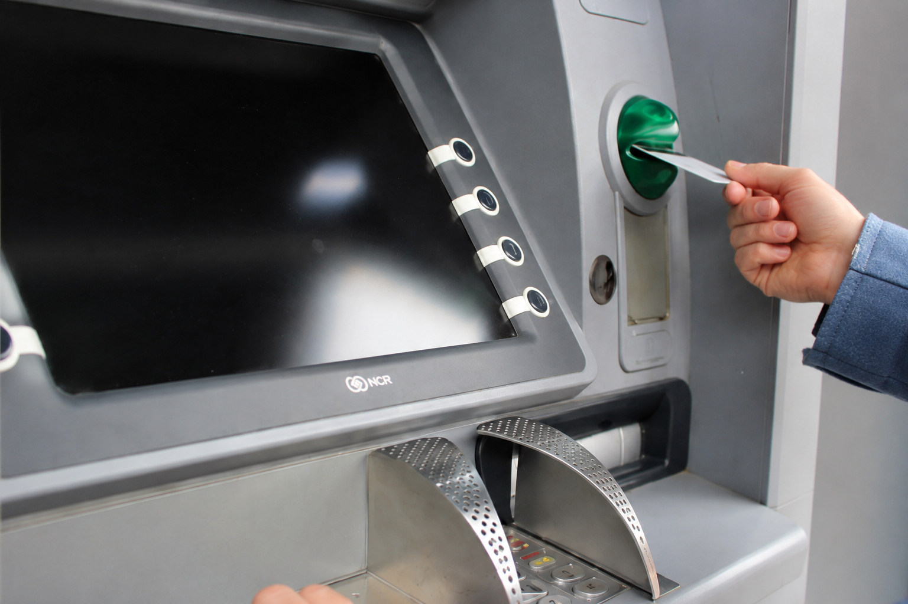

Conoce dónde están ubicados los cajeros automáticos (ATM) en Panamá y encuentra el más cercano de forma rápida y segura.
Un ATM (Cajero Automático) es un dispositivo electrónico que permite a los clientes realizar operaciones bancarias como retiros de efectivo, consultas de saldo, depósitos, transferencias y pagos de manera rápida, segura y disponible las 24 horas del día, sin necesidad de acudir a una sucursal bancaria.
Permite principalmente retirar efectivo y realizar operaciones bancarias básicas de forma rápida, segura y sin acudir a una sucursal.

Retiro de efectivo

Consulta de saldo
Depósitos en efectivo

Transferencias entre cuentas

Pago de tarjetas de crédito y préstamos

Pago de servicios
En Panamá, los cajeros automáticos (ATM) se clasifican principalmente en tres tipos según sus funciones operativas y el tipo de transacciones que permiten:
Si el cajero retiene tu tarjeta, no intentes recuperarla por tu cuenta. Comunícate inmediatamente con tu banco para bloquearla o solicitar su devolución.
Por motivos de seguridad, debes solicitar el cambio o recuperación de tu PIN a través de los canales oficiales de tu banco, como la sucursal, banca en línea o la aplicación móvil.
Sí. Puedes utilizar cajeros automáticos de otras entidades bancarias, aunque es posible que se aplique una comisión según las políticas de tu banco.
Sí, siempre que el cajero esté ubicado en un lugar bien iluminado, con vigilancia y sigas las recomendaciones de seguridad.
El monto máximo de retiro depende del banco, del tipo de cuenta y de los límites establecidos para tu tarjeta. Consulta con tu entidad bancaria para conocer el límite diario.
Conserva el comprobante, si lo recibiste, y reporta el incidente de inmediato a tu banco. La entidad verificará la transacción y realizará la gestión correspondiente.
Bloquéala inmediatamente desde la aplicación de tu banco o llamando al servicio de atención al cliente para evitar un uso no autorizado.